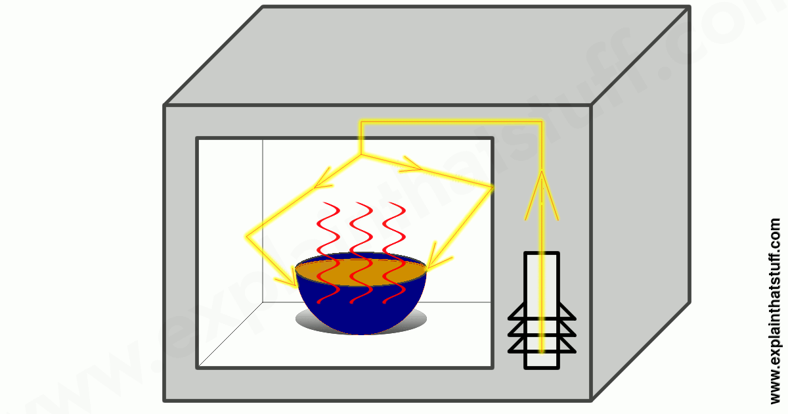
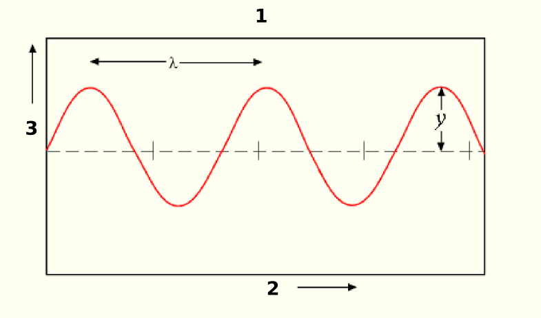

Uma onda é, em um grandessíssimo resumo, a propagação de um movimento-- ou melhor dizendo-- de sua energia no ambiente com uma velocidade constante. É definida, vetorialmente, pelas seguintes variáveis:
γ (Amplitude, ℝ);
λ (Comprimento de onda, m);
t (Período, s);
f (Frequência, Hz);
Vale lembrar que uma onda nunca transportará nada além de
energia, pois é, simplesmente, uma perturbação no
ambiente. Dois ótimos exemplos de onda são ondas de choque (fig. I) e ondas
eletromagnéticas (fig. II), que estarei representando abaixo:
Fig. I
Fig. II

Love Hina E04S01
"Microwave ovens | How do they work?"
Tanto o primeiro exemplo quanto o segundo são ondas tridimensionais, ou seja, ao invés de moverem a massa ao seu redor em apenas uma ou duas dimensões, acabam por movê-la em três dimenções ao perturbar o ambiente por completo. O diferencial aqui é de que enquanto a fig. II trata apenas de ondas magnéticas, a fig. I é uma onda de choque, feita por um conjunto de perturbações mecânicas. No tocante de ondas tridimensionais ainda podemos citar que a intensidade da onda diminui pelo quadrado da distância, o que podemos representar com d ⇒ r=d^2, onde d é a distância que implica no valor de r, que é a intensidade reduzida. Isso se dá ao fato do campo vetorial de ondas tridimensionais ser esférico, ou seja, partindo da premissa que a área de uma esfera aumenta pelo quadrado do raio, a intensidade da onda diminui com o quadrado deste raio. Já, no caso de uma onda unidimensional, de qual tipo iremos nos aprofundar, a intensidade de onda equivale proporcionalmente ao trabalho da amplitude, à velocidade da onda e ao trabalho da frequência, considerando que essa onda seja progressiva e harmônica.
Depois desta breve introdução, iremos começar com os básicos para que possa se entender o assunto em si.
Meios de propagação
Antes de continuarmos para a nossa parte semi-prática, eu acho que seria importante estabelecermos meios de propagação de ondas e para quais tipos de ondas eles se aplicam.
Eletromagnético; -> São resultado da perturbação no ambiente causada por um "casamento" entre um campo magnético e um campo elétrico. Por não dependerem de meio físico propriamente dito, podem se propagar em ambientes sem ar, por exemplo. Sinais de rádio, aparelhos de microondas e radares se propagam/funcionam dessa maneira.
Mecânico; -> Depende de meio material, ou seja, mecânico, para se propagar. Sons e ondas em cordas se propagam dessa maneira; inclusive, essa é a explicação de porquê não há som no espaço, justamente por não haver ar ou meio físico propriamente dito no ambiente para isso. >> Direções de propagação de ondas mecânicas: - Longitudinal: Paralela à perturbação; - Transversal: Perpendicular à perturbação;
Dimensões de propagação
Também, para contexto futuro, é necessário citarmos as possíveis dimensões de propagação de ondas de forma mais aprofundada do que a palinha que dei na introdução.
unidimensionais; -> Se propagam em uma única direção, em linha.
bidimensionais; -> Se propagam em duas direções, em um plano.
tridimensionais; -> Se propagam pelo ambiente inteiro, em um espaço-- que geralmente é representado como sendo uma esfera.
Reflexão de ondas
A reflexão da onda acontecerá sempre que ela encontrar um objeto denso o suficiente para impedí-la de ir em frente. Quando isso ocorre, a onda sofrerá reflexão, o que originará sua reflexão.
Extremidade fixa: Quando um pulso é gerado, faz cada ponto da corda subir e depois voltar a posição original. Todavia, quando ele encontrar a extremidade fixa-- como um gancho preso a uma parede-- a força aplicada nele, pelo princípio físico da ação e reação, reage de volta sobre a corda, causando um movimento inverso na direção da aplicação do pulso, consequentemente gerando uma reflexão desse pulso.
Extremidade livre: Considere uma corda, presa por um anel à uma haste ideal de atrito nulo. Ao atingir o anel, o movimento é continuado, embora não haja deslocamento no sentido do pulso, apenas no sentido perpendicular a este. Então o pulso é refletido em direção inversa de volta à aplicação. Para estes casos não há inversão de fase, já que o pulso refletido executa o mesmo movimento do pulso incidente, apenas com sentido contrário. É possível obter-se a extremidade livre, amarrando-se a corda a um barbante muito leve, flexível e inextensível.
Conciliando prática e teoria: simulações da PhET
Após a apresentação dos conceitos básicos, acho que já é hora de irmos para a nossa simulação. A pedido do profº Leandro, para esse trabalho, utilizamos o simulador de ondas da Universidade do Colorado (PhET), que pode ser encontrado em phet.colorado.edu.
Aqui vão nossos resultados:
Acertando as contas: o que cada variável das que compõem vetorialmente uma onda significam, afinal?
 Creio que agora seja a hora certa para explicar a função de cada uma das variáveis que citei anteriormente, na nossa introdução.
γ (Amplitude, ℝ); -> É basicamente a medida da magnitude de uma perturbação. A sua unidade de medida física varia de acordo com o tipo de onda, por isso deixamos ℝ como unidade, afinal esta varia, logo indicamos que é apenas um número real.
λ (Comprimento de onda, m); -> O comprimento de onda é basicamente o que o nome diz: o comprimento da onda, ou seja, a distância entre dois vales e duas cristas.
t (Período, s); -> O período, indicado pela variável t, é o tempo de um ciclo completo da oscilação de uma onda. É medida em segundos. Estou citando-a antes da frequência pois ela é a base da "mini-equação" que usamos para descobrir a frequência de fato.
f (Frequência, Hz);
-> A frequência é o exato oposto do período. Dá-se pela divisão de 1 por t (se lembra da variável de período?) e ela, ao menos nessa fórmula, sempre será expressa em Hertz. Mas, num panorama geral, é apenas o número de ocorrências de algo por uma unidade de tempo.
Explicando porquê cada onda se comportou de tal jeito nas figuras
Irei explicar na ordem da tabela, para ficar mais simples e não tão redundante.
1ª rodada: Nós configuramos no modo Oscilador, com amplitude nula, amortecimento médio, frequência nula e tensão alta.
Por não termos nenhuma amplitude, nem frequência e estarmos com a tensão no máximo, não tivemos nenhuma oscilação. Logo, tivemos apenas uma corda estática.
O oscilador simplesmente não girou (por conta da frequência nula), logo não houve perturbação e, sem perturbação, sem onda.
2ª rodada: A única diferença em relação à primeira rodada que tivemos, por conta da amplitude definida para 0.47 cm, foi a corda gerando um ângulo agudo em relação à linha imaginária de 90°.
3ª rodada: Com amplitude 0.62 cm e frequência de 1.52 Hz-- nós conseguimos uma onda estável, constante e elegante. De certa forma, a amplitude "casou" com a frequência.
4ª rodada:
Nessa rodada, praticamente, duplicamos a frequência-- de 1.52 Hz para 3.00 Hz-- o que gerou ondas extremamente agitadas que não conseguiam manter a mesma amplitude por mais de uma oscilação.
5ª rodada:
Nós configuramos a amplitude para 1.25 cm e a frequência se manteve a mesma da 4ª rodada. Os resultados foram semelhantes, em suas devidas proporções de velocidade e tamanho, aos da terceira rodada, afinal aumentamos a frequência junto com a amplitude.
6ª rodada:
Mantivemos os mesmos valores de antes, apenas alterando o amortecimento de 5 para 6 e a tensão de 3 para 1. As curvas se tornaram tão agitadas que pareciam mais triângulos isóceles do que curvas propriamente ditas.
Considerações finais
Concluimos que ondas são um assunto relativamente simples quando botamos as informações na mesa e as organizamos, além de
serem extremamente pertinentes para o nosso entendimento de como o Mundo literal funciona e de como podemos responder simples
curiosidades populares até evitar catástrofes em grande escala ao ter o mínimo de conhecimento sobre esse assunto e aplicá-lo
de forma correta. Realmente esperamos que esteja um texto de simples compreensão e que possa ser reutilizado futuramente por alguém.
{kind=link}
{kind=link}
{kind=link}
{kind=link}
{kind=link}
{kind=link}